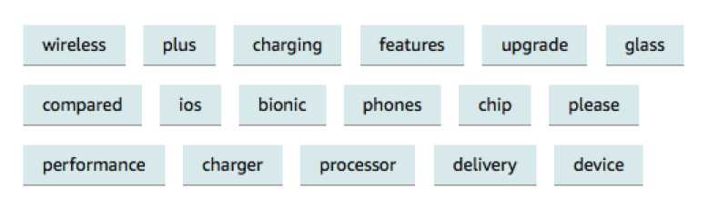
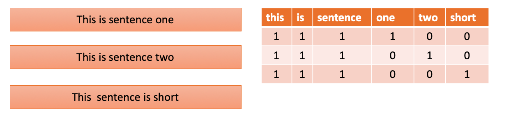
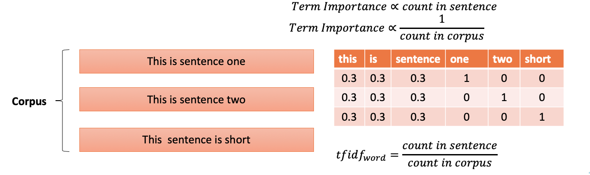
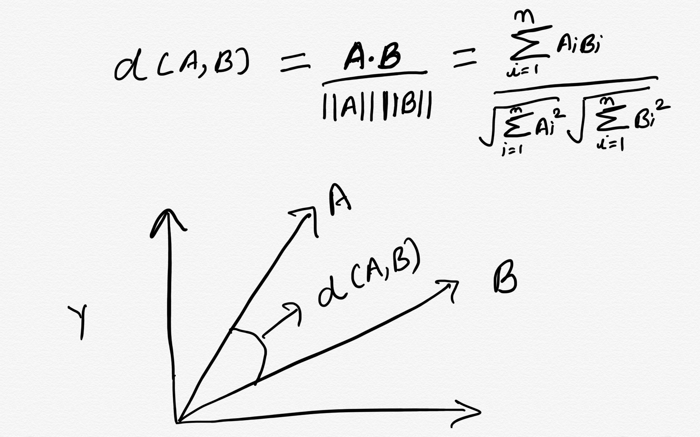
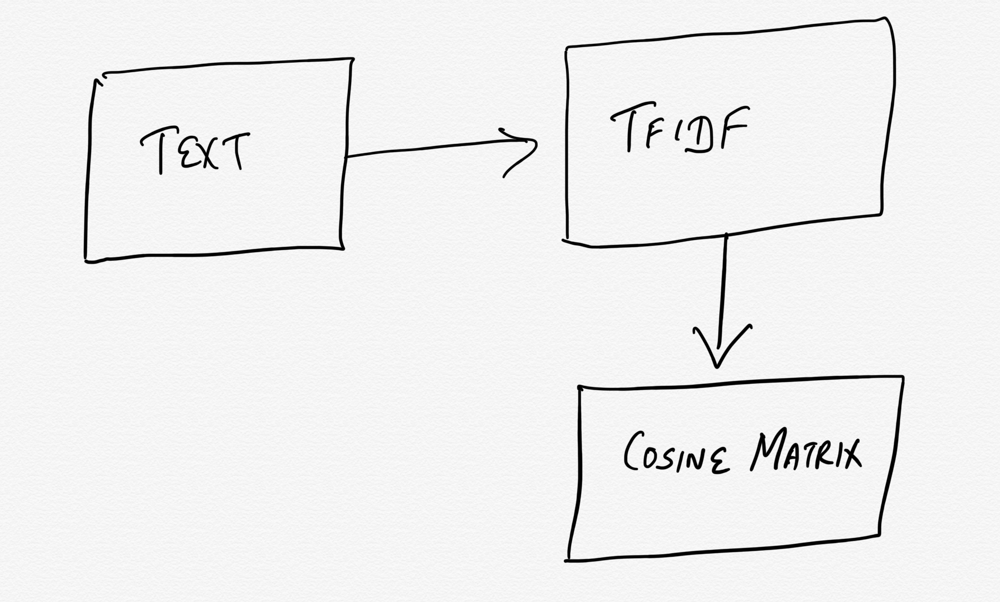

- SME/Senior Faculty with Jigsaw Academy
- Been in Academia prior to Jigsaw taught courses in Statistics, Research Methods @ GNDU, Amritsar
- Academics: Statistics, Maths and Economics
Text Mining
Text Representation and Aspect Based Sentiment Analysis
Gunnvant (Jigsaw Academy)
About me
Assumptions I make about you
- Interested in text analysis
- Know python and its DS/ML ecosystem
- Have seen and worked with jupyter notebooks
Agenda
- Text mining what and why?
- Representing text for ML tasks:
- Can we predict when trump tweets?
- Summarizing ted talks
- Recommending ted talks to watch
- NLP and aspect extraction
- What do people talk about in Amazon reviews?
- Word vectors and Aspect Synonyms
- Amazon reviews continued
- Lexicon based sentiment analysis
- Tying the loose ends
Pre-reqisites
You have python anaconda installed along with spacy and textblob.If so, all the codes are hosted here, please download this repo.
If not I have created a lab environment. This cloud instance takes around 3-4 minutes to spin up, so you can click here and start the lab
Text mining: what and why?
Text mining: what and why?

Text mining: what and why?

Text mining: what and why?

Text mining: what and why?

Text mining: what and why?

Representing text for ML tasks
Most ML tasks are centered around finding a mapping between predictors and labels
\[labels=f(Predictors)\]
Representing text for ML tasks
Most ML tasks are centered around finding a mapping between predictors and labels
\[labels=f(Predictors)\]
And this is how mostly data should be laid out if any ML is to used:

Representing text for ML tasks
But what will you do if you want use text as an input to an ML task?
| Predictor | Label |
|---|---|
| This Joke is very funny | Haha |
| This Joke is not funny | Meh |
| Good joke | Haha |
| Pathetic joke | Meh |
The underlying assumption while doing any kind of ML task is that one can estimate the functional dependence \(f\) between predictors and targets
\[labels=f(Predictors)\]
To find any sort of functional dependence one will need to represent both predictors and labels as numbers
Representing text for ML tasks
Its easier to deal with labels:
| Predictor | Label |
|---|---|
| This Joke is very funny | 1 |
| This Joke is not funny | 0 |
| Good joke | 1 |
| Pathetic joke | 0 |
But how do we handle the text?
Representing text for ML tasks
Traditionally we can use a BOW (Bag of words approach to represent text)

Representing text for ML tasks
The problem with BOW represetntation of text is:
Submit and Compare ClearRepresenting text for ML tasks
An imporovement on the BOW approach is the tfidf representation

Representing text for ML tasks
If you use tfidf representation on a corpus which is fairy large, then (Choose the ones which are correct)
- One can end up with a tfidf matrix with many columns
- The order of the words will not be retained
- Very compact representation of the text will be obtained
- Nothing could go wrong in life !!!

Can we predict when trump tweets?
Let's head over to our lab to see how we can predict if a tweet is made by Donald Trump or by some-one else.
Summarising ted talks
Let's take another example to see how we can use tfidf representation in other creative ways. We will take a look at a dataset and try to extract "important" terms out of this document. All we will need to do is pick up the words that have very high tfidf scores.
Doing this will make sense when you have a text corpus which respects the rules of standard english grammar and uses standard english vocabulary.
Let's visit the lab again, you can follow along locally as well.
Representing text for ML tasks
Another thing that any numerical representtion of text enables us to do is, in establishing similarity over text. This can aid in doing text search and hence in aid in recommendations.
The idea is that two similar pieces of text will have similar tfidf representation.

Representing text for ML tasks
Representing text for ML tasks
One very popular way of finding the distance between vectors is to use cosine distance.

Recommending ted talks
The ideas discussed can be summarised as below:

These basic building blocks can be used to create contextual search recommendation. Head over to the lab/local code
NLP and aspect extraction
Let's now turn our attention to what NLP is and how it can help us in different business contexts. But what is NLP?

NLP and aspect extraction
So, how does the ability to do POS tagging or finding out Subject-Object relationships helps us? Sample the sentences below
- I loved the camera in this mobile phone. But I hated the build quality
- The beach has amazing views. Food is great. Drinks are even better and locals are friendly
Can you see how POS tagging be of any use here? Let's again go back to our lab and work with nlp_basic.ipynb
NLP and aspect extraction: What people in Amazon Reviews talk about?
What does this leads to?
If you are interested in finding what people are talking about:
- Label all the words with their pos tag
- Count frequently occuring nouns
Let's head back to our notebook.
Word vectors and aspect synonyms
The approach discussed so far is useful if you want to do some exploratory analysis. The approach will be useful if you don't know what people are talking about.
What if you already knew what are the aspects you would want to search for? You can use word vectors to find out words similar to the aspects that you have finalised.
Word vectors and aspect synonyms
All about word vectors goes here.....